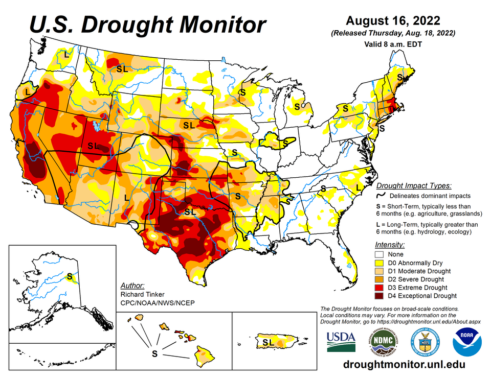

Drought is the most diffuse of the natural hazards. It has no epicentre, no landfall and no single moment of onset; it is defined not by the presence of something but by the persistent absence of water relative to what a society or an ecosystem has come to expect. That relative character is what makes drought both scientifically subtle and socially destructive. A year with 300 mm of rain is a catastrophe in a humid farming district and an ordinary year in a semi-arid one, so every operational definition of drought must be anchored to a local climatology, to a particular part of the hydrological system, and ultimately to a particular demand for water.
Measured by the number of people affected and by long-run economic loss, drought ranks among the costliest hazards on Earth. In the United States, NOAA's billion-dollar disaster inventory places droughts, together with their associated heatwaves, among the most expensive event types per event, and historically droughts have been implicated in some of the deadliest famines ever recorded. Yet the death toll of a drought is never a purely physical quantity: whether a rainfall deficit becomes a crop failure, and whether a crop failure becomes a famine, depends on markets, governance, conflict, entitlements and the presence or absence of functioning relief systems. A graduate-level treatment of drought must therefore move from the physics of the surface energy balance to the political economy of food.
This course treats drought as a propagating anomaly in the coupled land–atmosphere–hydrosphere system. We begin with definitions and the propagation of a precipitation deficit through soil moisture, streamflow, reservoirs and groundwater. We then develop the physical machinery — the surface energy and water balances, the Penman–Monteith equation and the role of vapour-pressure deficit — that determines how much water the atmosphere demands. We examine the standard drought indices and how they are calculated, the large-scale ocean–atmosphere drivers of drought, land–atmosphere feedbacks and the newer concept of flash drought, groundwater depletion as observed from space, and the tree-ring record of megadroughts far larger than anything in the instrumental era. The later lessons address impacts, monitoring, management and the detection and attribution of drought in a warming climate. Nine case studies, from the Global Famine of 1876–78 to the Horn of Africa drought of 2020–23, illustrate how physical and human factors combine.
In this course, you will:
- 1.Distinguish meteorological, agricultural, hydrological and socioeconomic drought, and describe how deficits propagate and lag through the hydrological cycle
- 2.Apply the surface energy and water balances and the FAO-56 Penman–Monteith equation to quantify atmospheric evaporative demand
- 3.Calculate and interpret the SPI, SPEI, Palmer Drought Severity Index and satellite vegetation indices, and understand their limitations
- 4.Explain how ENSO, the Indian Ocean Dipole, Pacific and Atlantic multidecadal variability, blocking and subtropical ridges organise drought
- 5.Analyse land–atmosphere feedbacks, flash-drought development and groundwater depletion observed by GRACE
- 6.Interpret tree-ring reconstructions of past megadroughts and their statistical uncertainties
- 7.Evaluate drought impacts on agriculture, ecosystems and food security without reducing famine to rainfall alone
- 8.Assess monitoring, early-warning, management and attribution frameworks, including the evidence for anthropogenic influence on drought
Figures


Contents
Defining Drought and Its Propagation Lesson 2
The Surface Energy and Water Balance and Evaporative Demand Lesson 3
Drought Indices and Their Calculation Lesson 4
Large-Scale Drivers — Ocean Modes, Ridges and Blocking Lesson 5
Land–Atmosphere Feedbacks and Flash Droughts Lesson 6
Hydrological Drought, Streamflow Sensitivity and Groundwater Lesson 7
Paleoclimate Reconstructions and Megadroughts Lesson 8
Impacts — Agriculture, Ecosystems, Food Security and Famine Lesson 9
Monitoring, Forecasting and Drought Management Lesson 10
Drought in a Changing Climate — Detection, Attribution and Open Questions Case Studies
9 major events analysed References
25 sources for further reading
Image sources
- Figure 1 · Groundwater grace 2002-2023 US Southwest. By NASA Earth Observatory (Wanmei Liang). Public domain. From Wikimedia Commons: https://commons.wikimedia.org/wiki/File:Groundwater_grace_2002-2023_US_Southwest.jpg
- Figure 2 · 20220816 United States drought conditions. By National Drought Mitigation Center, USDA, NOAA (author Richard Tinker, NOAA CPC). Public domain. From Wikimedia Commons: https://commons.wikimedia.org/wiki/File:20220816_United_States_drought_conditions.png